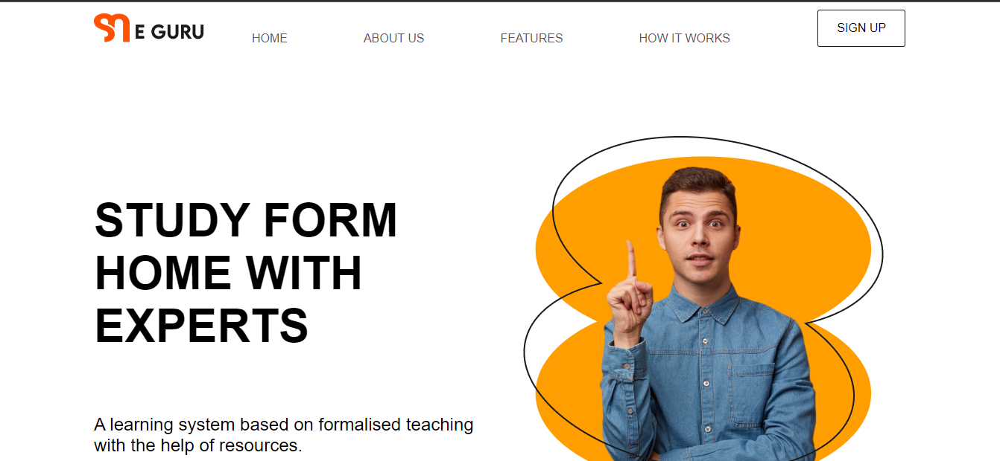
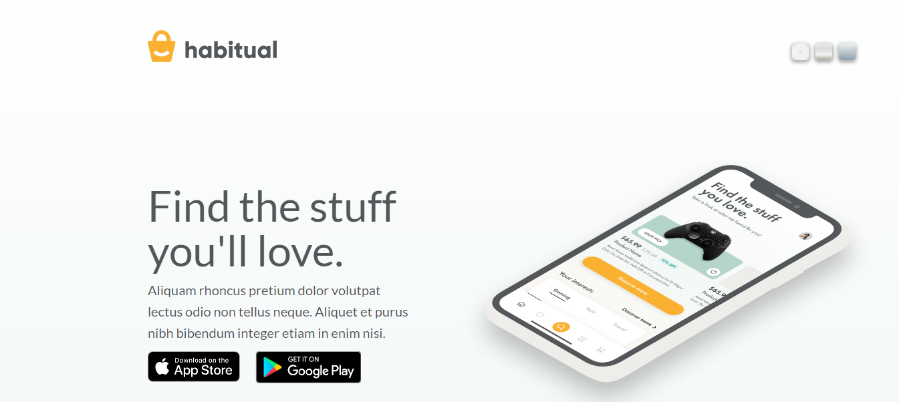

Intro
A Web Developer ready to work for you. All of my skills are Self-acquired, now ready to be a part of your Development and Design team. By the way, check out my Awesome Work.
Being a self proponent, coding became my passion from the very first day, I wrote a 'Hello World' code in HTML. Being a driven and organized person I taught myself programming in 7 months, did some amazing projects and offered my services to some freelance clients. But now I'm ready to be part of your team , and offer my 100% to your system.
Thank You
HTML_CSS
Manage
Manage is a cloud-provide company.Leveraging our on-demand Disaster Recovery as a Service (VPC+ DRaaS) you have a complete Backup and Disaster Recovery strategy to restore your application and cloud environment in a single click. This also enables application mobility across regions and clouds without mounting costs, and no operational complexities.
With our periodic and on-demand backups, you can ensure your environments can be restored in a matter of minutes when needed. Manage is made in tailwind Css. I was appointed to redesign this site, to make the site more modern and more readable.
View Site
Morocoo
Aoife Conleavy is a novelist who has been writing about her travels for nearly two decades. Before the launch of her new novel Tide Blade, which features the stories of real-life characters in Morocco, the author wants to spruce up her professional website.
I was appointed to modify the typography on her site, changing the size, style, and font families, to make the page easier to read. I help Aoife Conleavy improve the readability of her site for her readers.
View Site
Typography
Typography is the art of arranging letters and text in a way that makes the copy legible, clear, and visually appealing to the reader. It involves font style, appearance, and structure, which aims to elicit certain emotions and convey specific messages. In short, typography is what brings the text to life.
Typography is a simple website that i created to learn more about Css and how things work in css, the font styles and font families. Typography is a open-source project I built and is open to anyone woh wants to learn Css.Typography is purely built in advanced Css.
View Site
LogIn Page
Login page is a simple website made in tailwind Css. This is a simple project to showcase my skills in both HTML and CSS. This site contains a python database that contains all the data of the costumers.
View Site

E-Learning Page
E-guru has been developing Educational and Recruitment Programs that make use of game-based approaches and technologies. E-guru or kids, worksheets and online games that work best on iPad, iPhone, and android devices are developed with love and genuine concerns, therefore, everything on the learning apps is kids friendly and super safe to use. The Learning Apps intend to strengthen new ways of learning with the correct innovation to improve education and fun for kids via best apps for learning.
I was given the task to make the website more modern and efficient. It is made purely in CSS and HTML.
View Site
Paints
Paint store is a passion project that contains different css colors depending on their opacity and there mixing with others. Paint store has always been my passion project and finally being able to code it was a amazing power.
I was given the task to make the website more modern and efficient. It is made purely in CSS and HTML.
View Site
CSS Cheat-sheet
the CSS Cheat-sheet is a part of open-source contributions. This is the first contribution to open source by my side.
This website is a passion project. It is made purely in CSS and HTML.
View Site
Javascript
Calculator (simple)
Calculator is one of the musts of a Developer Portfolio, Making the Calculator as an armature was a hard task but with more and more practice i was able to make this calculator with ease.
View Site
Count Down
When Learning React this wass one of the must haves project, and making it in javascript gave me an extra boost of confidence in my skills.
View Site
Kanban Board
Kanban Boards are one of my most favouraite productivity systems. Challenging myself to make this was an amazing journey and I had a lot of fun. And apart from that I have my own Free Kanban App for my Daily productivity Chart.
View Site
Navbar Animations
After Web 3.0 animations are one of the essentials of good Web Design and this project is me challenging myself to do some simple animations. This is my first animation project and more animations will come after this. Cause I am hooked.
View Site
Template Page
One of the best things you can have as a Web Developer is a Template Site, and after doing some Project this template was one of the best things I made. It not only gave me a solid grip on Javascript but also built my Resource file for any future project.
View Site
NASA Pictures
This NASA api is just a passion project where I tried to Build some of the best Nasa projects catalog. This project is very personal to me and combines my skill of coding with my passion for the space. Soon a refined version of this will become my passion blog.
View Site

Bg-Changing Template
After animation a changing background is one thing that makes a site very modern, and this is my implementation of the background changing site. This site is created in pure Vanilla Javascript and is my personal resource file for many projects.
View Site
Games

Pong Game
Pong is one of the OG 90's game we enjoyed playing growing up. This was one of the best days when I recreated this game for myself.
Pong is a table tennis_themed twitch arcade sports video game, featuring simple two-dimensional graphics, manufactured by Atari and originally released in 1972.
View My Game
dino game
Dino Game is my fav past-times when the internet is down. it still play it everytime, when I am free. Recreating this game was a Og moment for me and is one game I am very proud to have made.
The Dinosaur Game is a browser game developed by Google and built into the Google Chrome web browser. The player guides a pixelated Tyrannosaurus rex across a side-scrolling landscape, avoiding obstacles to achieve a higher score. The game was created by members of the Chrome UX team in 2014.
View My Game
Snake Game
Since, the button phone we all have played snake game, and recreating this game was one of my many dreams, although the progress on this game is continuous but I am proud I have cracked the code on it.
Snake is a video game genre where the player maneuvers a line that grows bigger after eating something, typically apples, making the snake a primary obstacle to itself.
View My Game

Tik-Tak-Toe
Since, the button phone we all have played snake game, and recreating this game was one of my many dreams, although the progress on this game is continuous but I am proud I have cracked the code on it.
Snake is a video game genre where the player maneuvers a line that grows bigger after eating something, typically apples, making the snake a primary obstacle to itself.
View My Game
Digital Art

Bridge (Watercolor)

Avocado Toast (Inking)

Pot Plant(Inking)

Room(Inking)

Spices(Inking)

Night (Isometric)

Sunset (cartoon)

Road Trip(Illustration)

Mandala eFFECT

Lemon (Wallpaper)
About
As a creative person I would love for an opportunity to become more proficient in programing, and use it to put my theoretical ideas in practical from. Working my way through university to become a Professional Web Developer, as I feel this is the perfect career for me.
Technical Skills
- HTML
- CSS
- Tailwind Css / Bootstrap
- Javascript (Frontend)
- React (Frontend Responsive)
- Python (Backend Server)
- UI/UX Design (Figma)
Contact